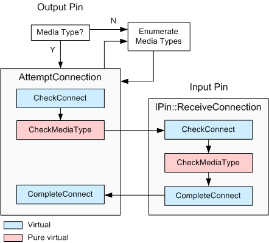

[The feature associated with this page, DirectShow, is a legacy feature. It has been superseded by MediaPlayer, IMFMediaEngine, and Audio/Video Capture in Media Foundation. Those features have been optimized for Windows 10 and Windows 11. Microsoft strongly recommends that new code use MediaPlayer, IMFMediaEngine and Audio/Video Capture in Media Foundation instead of DirectShow, when possible. Microsoft suggests that existing code that uses the legacy APIs be rewritten to use the new APIs if possible.]
This section describes how the CBasePin class implements the pin connection process.
The Filter Graph Manager initiates all pin connections. It calls the output pin's IPin::Connect method, specifying the input pin. The output pin completes the connection by calling the input pin's IPin::ReceiveConnection method. The input pin can accept or reject the connection.
The Filter Graph Manager can also specify a media type for the connection. If so, the pins try to connect with that type. If not, the pins must negotiate the type. The Filter Graph Manager may also specify a partial media type, which has the value GUID_NULL for either the major type, subtype, or format type. In that case, the pins try to match whichever portions of the media type were specified; the value GUID_NULL acts as a wildcard.
The CBasePin::Connect method starts by verifying that the pin can accept a connection. For example, it checks that the pin is not already connected. It delegates the rest of the connection process to the CBasePin::AgreeMediaType method. Everything that follows is performed by AgreeMediaType.
If the media type is fully specified, the pin calls the CBasePin::AttemptConnection method to attempt the connection. Otherwise, it tries media types in the following order:
You can reverse this order by setting the CBasePin::m_bTryMyTypesFirst flag to TRUE.
In each case, the pin calls IPin::EnumMediaTypes to enumerate the media types. This method retrieves an enumerator object, which is passed to the CBasePin::TryMediaTypes method. The TryMediaTypes method loops through each media type and calls AttemptConnection for each type.
Within the AttemptConnection method, the output pin calls the following methods:
Note the following:
If any of these steps fails, the output pin calls the CBasePin::BreakConnect method to undo whatever steps were taken by CheckConnect.
The input pin's ReceiveConnection method calls the input pin's CheckConnect, CheckMediaType, and CompleteConnect methods. If any of these fail, the connection attempt also fails.
The following diagram shows the connection process in CBasePin:

Â
Â